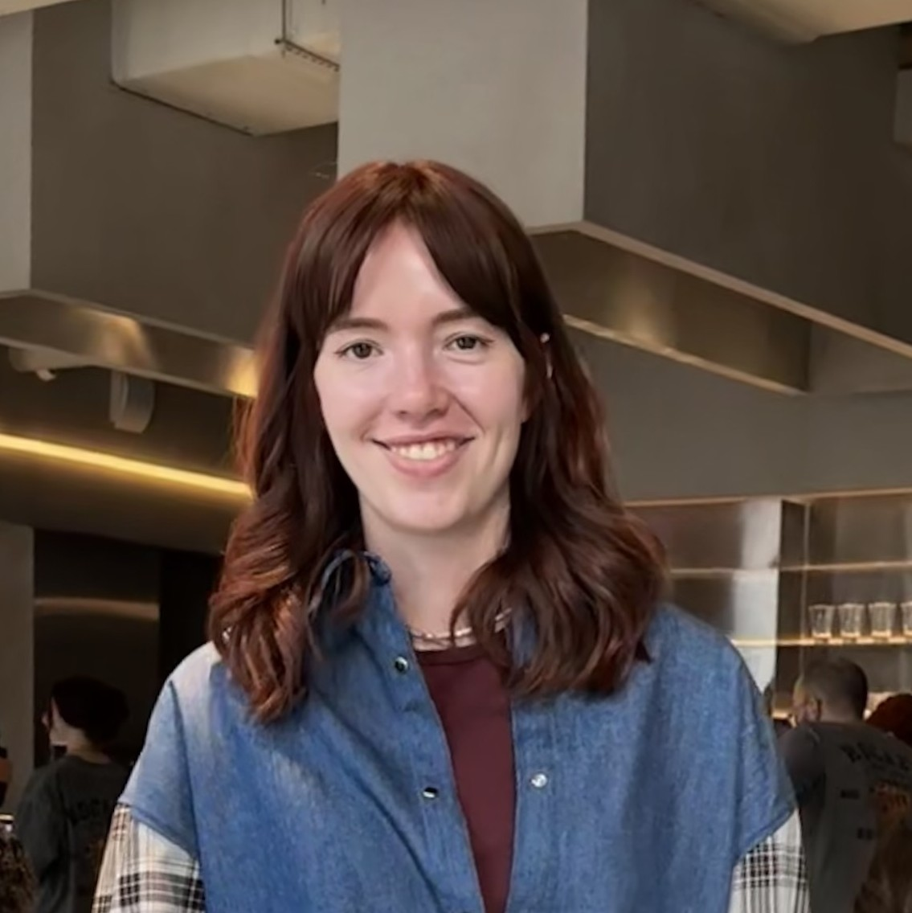
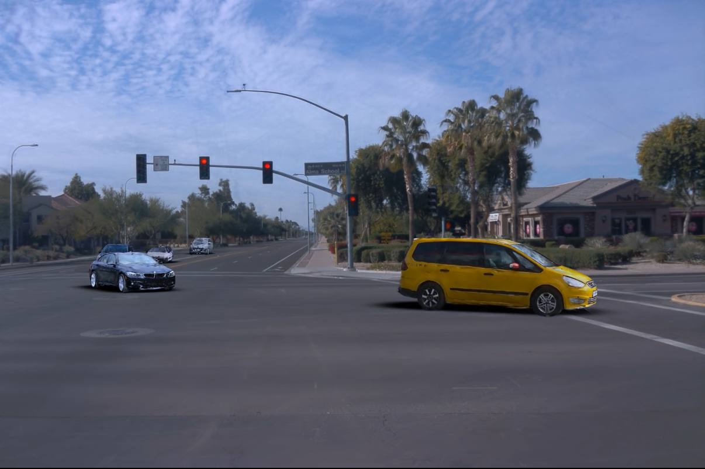
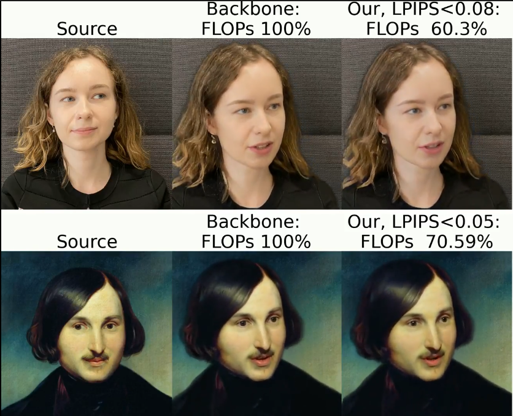

Polina Karpikova
I am a Ph.D. student at the University of Tübingen
in the Autonomous Vision Group ,
led by Prof. Andreas Geiger .
Previously, I worked as a Research Engineer at Yandex Autonomous Vechicle (2024-2025) and Samsung AI Center (2022-2024).
I completed my Master's in Data Science at a joint program between
The National Research University Higher School of Economics (HSE) and
Skolkovo Institute of Science and Technology (Skoltech) .
My research interests lie in the fields of computer vision, computer graphics and machine learning. I am particularly interested in 3D reconstruction and novel view synthesis.
Email /
Google Scholar /
Github
Selected papers
* denotes equal contribution

Your browser does not support the video tag.

Memory-Augmented Driving Scene Modeling
Polina Karpikova* ,
Daniil Selikhanovych* ,
Kirill Struminsky* ,
Ruslan Musaev ,
Maria Golitsyna ,
Dmitry Baranchuk
under review
Arxiv
Driving scene reconstruction with car replacement by retrieval and relighting.
Super: Selfie Undistortion and Head Pose Editing with Identity Preservation
Polina Karpikova ,
Andrei Spiridonov ,
Anna Vorontsova ,
Anastasia Yaschenko ,
Ekaterina Radionova ,
Igor Medvedev ,
Alexander Limonov
ICIP , 2024
Paper
Undistortion and head pose editing with identity preservation by
blending depth-based warping and 3D GAN generation.
Your browser does not support the video tag.

Fiancee: Faster inference of adversarial networks via conditional early exits
Polina Karpikova* ,
Ekaterina Radionova* ,
Anastasia Yaschenko* ,
Andrei Spiridonov* ,
Leonid Kostyushko ,
Riccardo Fabbricatore ,
Aleksei Ivakhnenko
CVPR , 2023
Project page
/
Paper
Early exit strategy for image synthesis, dynamically routing the computational flow
towards the needed exit in accordance to input complexity.
{kind=link}